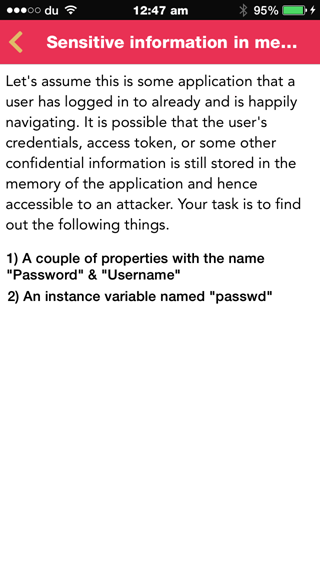

In this article, we will look at analyzing the memory contents of an iOS application. iOS applications may store sensitive information like passwords, session IDs etc in the memory of the application without releasing them. In some cases, releasing these variables may not be an option. For e.g, it might be required for the application to send an authentication token with every request and hence there has to be a reference to it in the memory somewhere. Even though these variables might be encrypted when stored locally in the application, these variables will be in their unencryped format while the application is running. Hence, analyzing the contents of the memory is an important thing while pentesting an iOS application. If there are some important properties or instance variables that are not required, they should be released from the memory.
ETHICAL HACKING TRAINING – RESOURCES (INFOSEC)
Basically, the memory of the application will contain a lot of information, most of which we will not be interested in. These things might include instantiated UIViews and other UI elements. We will definitely be interested in instantiated view controllers and their properties though. It is important to understand and focus on only the relevant information in the memory. For a penetration tester, you should mainly be interested in all the values of the properties and instance variable in an application.
We will be solving the Sensitive information in memory challenge in Damn Vulnerable iOS application
. 
If we look at the challenges, the first challenge is to find properties named username and password. To do that, first we have to get the reference to the current view controller. From the class-dump output of the application, it is easy to figure out that the class name of this view controller is SensitiveInformationDetailsVC. We can find the reference to this class objects using the choose function in cycript. The choose function takes an Objective-C class as an argument, and attempts to scavenge the heap looking for regions of memory that are the right size and shape as the class (or any subclasses of that class) you have specified. So basically, it will find references to all objects of the classes and subclasses that you have provided.
Hence, to find the instances of the class SensitiveInformationDetailsVC, let’s use the choose function with the class name as the argument.
As we can see, there is only one reference, and can be accessed using the index 0.
To find out all properties, use the command a[0]->isa.messages.
Now, you can scan the output for all property names that you find interesting. Since we already know the property names in the challenge, which is username and password, we can directly access them using the commands shown below.
That’s it. Pretty simple isn’t it.
Next, we need to find some instance variable. For this, we need to define a function that will print all the instance variables for a particular instance.
function tryPrintIvars(a){ var x={}; for(i in *a){ try{ x[i] = (*a)[i]; } catch(e){} } return x; }
Now, lets give the input as the instance of the class SensitiveInformationDetailsVC and we can see that it printed out all the instance variables along with their values.
However, we cannot find an instance variable named passwd. What’s going on ? Well, here’s the thing. The thing with instance variables is that they can be initialized within a particular method. If the function hasn’t been called, the instance variable wouldn’t be initialized. Also, because of a feature knows an ARC (Automatic reference counting) in iOS, the variables will automatically be released once the function has stopped executing. In some cases, you might not be able to call a function via manual browsing of the application, and that’s where cycript becomes useful. Going back to the methods of this class, we see that there is a method named initializeLogin. And since it is the only other method apart from the regular iOS methods like viewDidLoad and didReceiveMemoryWarning, it is safe to assume that the instance variable is created in this method.
Once we call the function initializeLogin, the instance variable will instantiate and be stored in the memory of the application. The trick here is to use GDB to analye the application contents during the runtime and find the value of the variable before the function stops executing.. I will leave this as an exercise for you. And just for the sake of convenience, here is the source code of the initializeLogin method.
-(void)initializeLogin {
//DO random stuff
NSString *passwd = @"MYw0r1d1821";
//Finish doing random stuff
}
Mark Beard has written a nice article on dumping application memory from the heap and also released a tool to do so. I would recommend that you check the article out as well.